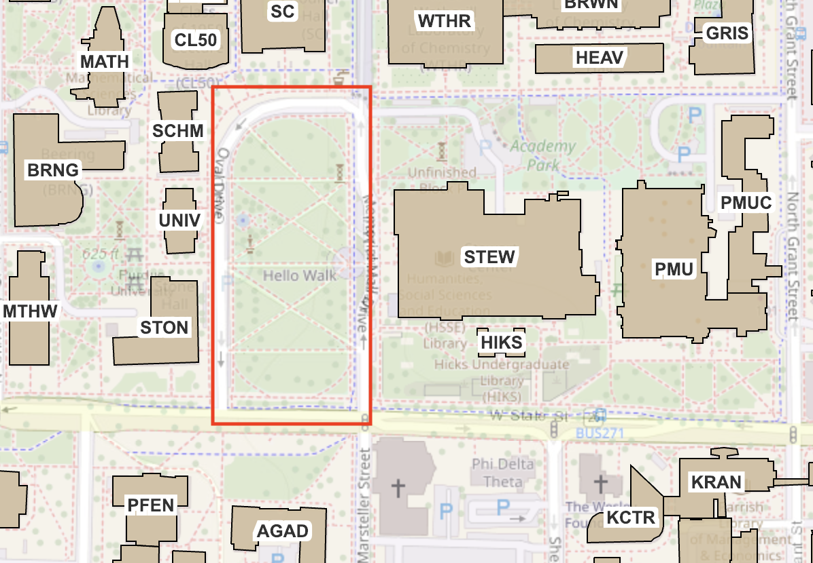

New Student Orientation
Dear Class of 2027,
Welcome to Purdue College of Science! We are so excited for the wonderful experiences in store for you these next few years, and we hope you are, too!
Before the first week of classes, PSSC hosts New Student Orientation for the incoming class of the College of Science.
On Friday, August 18, 2023 (the Friday before classes begin), from 2-4 PM, Purdue Science Student Council will be hosting New Student Orientation for all incoming freshmen in the College of Science. The event will be held at Memorial Mall.
A map of Memorial Mall is shown below for your reference.
New students will have the opportunity to meet other students in their major, ask questions to upperclassmen, and speak with their academic advisors while enjoying refreshments from the Kona Ice truck. There will also be a raffle for free Purdue merch!
This is a great opportunity to meet other students in your major, learn about the College of Science, and get to know PSSC.
We look forward to meeting you soon!
FAQs for Freshmen
- Krach, 3rd Street Starbucks, PMU Basement
- WALC, Hicks
- Outdoors, when the weather is nice.
- Ford (salad bar, crab rangoon's)
- Earhart (convenience)
- I wish I would have found a mentor in my major/career path that I could have gone to for advice!
- Introduce myself to more people and make connections with professors
- I wish I would have gone to more club callout meetings
- Utilize this time to hang out with people from the FB C/O 2027 group!! This is the most enthused people are gonna be about meeting other people!!!
- Being straight forward and talking to people, then trying to find things in common or inviting them to do things with you.
- Talk to people in your classes and get involved on campus
- Talk to your advisor so it's on their radar too; READ ABOUT PROFESSORS' RESEARCH and if it sounds cool, reach out! They don't expect you to know everything already and love having long-term undergrad students in the lab!
- Ask older students about their experiences!
- Read about the labs before contacting them and be prepared to ask specific questions about the research and the lab in general when you meet with the PI.
- Put everything into a digital calendar, make 2-3 hour time blocks every day for work so you don't compromise other things. Being said, prioritize sleep since it is what helps build your memory and plasticity!!!!! Also, the pomodoro method is excellent.
- I make a weekly to-do list and a daily to-do list. With the daily to-do list, I plan how long each thing will take and then organize my day based on the amount of time each task will take.
- BoilerLink, BInvolved Fair, Reach out to upperclassmen about the clubs they know about
- Attend callout meetings, reach out to people in the clubs
- Come to the PSSC Callout!
- SLEEP ENOUGH! Utilize the CoRec for physical health! Spend time outside when you can! Make time for your hobbies + friends + creative outlets
- Go for a walk and enjoy nature when it’s nice outside, it’s super relaxing!
- Take breaks from studying to go on a walk or to get food. If you study for too long without breaks it is easier to get burned out later in the semester.
- Outlook + Google Calendars
- West Lafayette Public Library Card (You can borrow free ebooks + audiobooks for recreational or class novels)